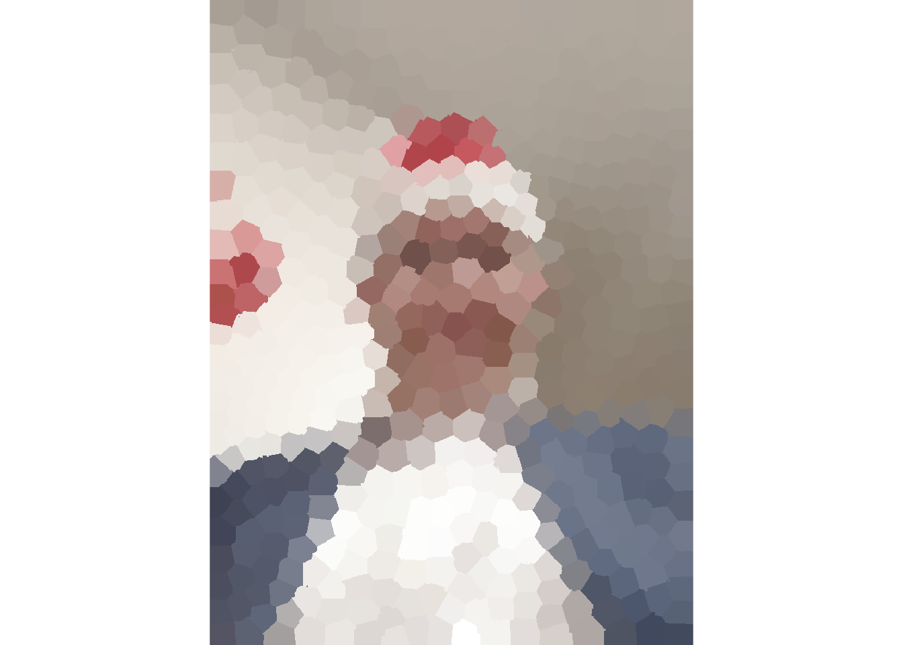
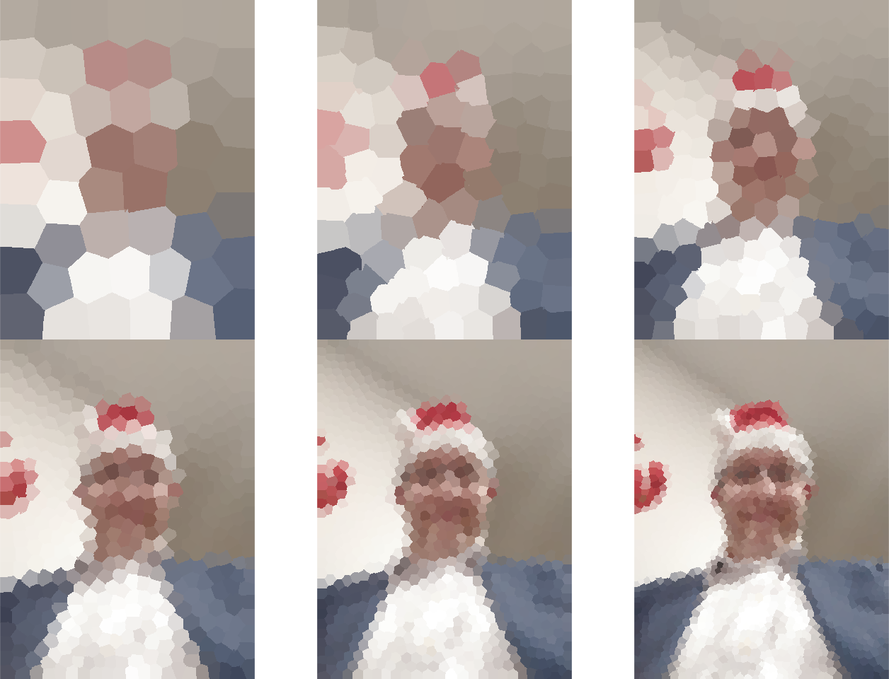
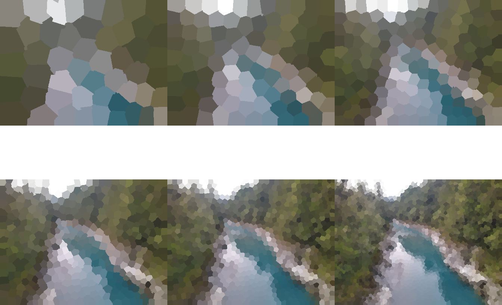
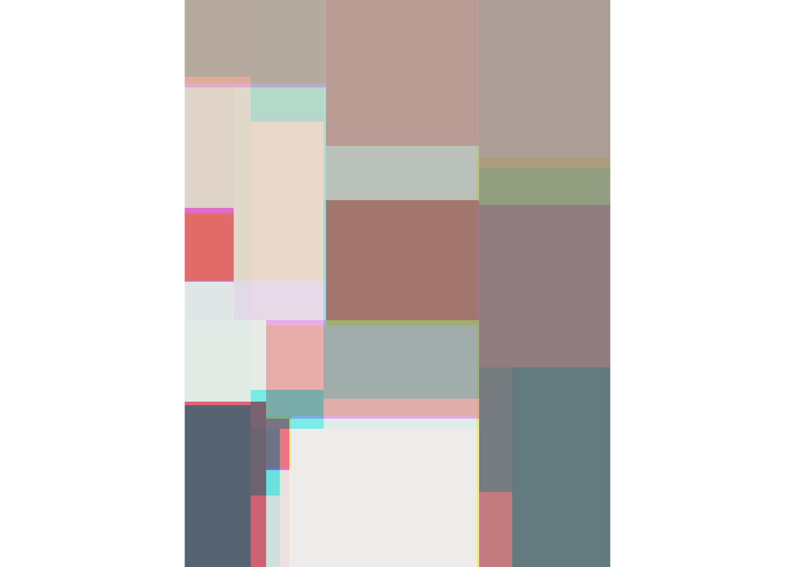
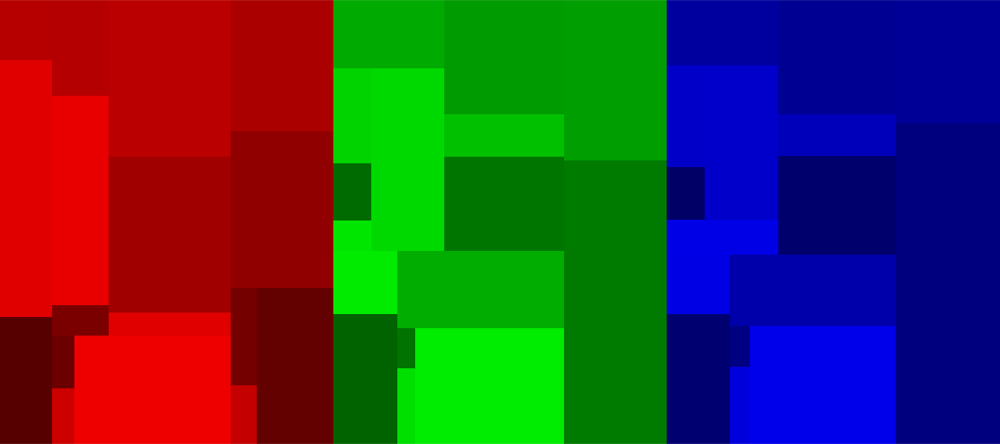
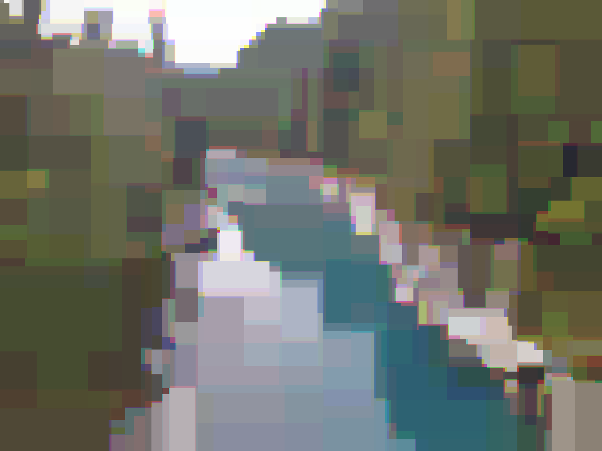
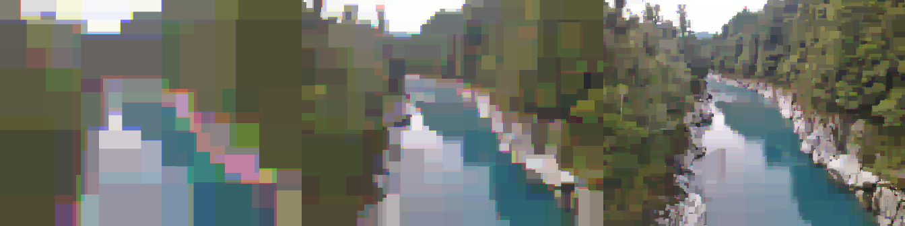

knitr::knit_hooks$set(crop = knitr::hook_pdfcrop)Digital Cubism (1)
R
graphics
Kmeans and CART
I generaly do not like cubism, to me it looks messy, with body parts all over the place. But there is a subset of cubism that appeals to me, pieces like Girl with Mandolin, with the sharp outline and geometric appearance, yet the figure is still easily recognized.

This gave me an idea to try approximate image with a series of geometric shapes. Ideally, we would use only a few squares, rectangles and so on, but achieve a recognizable image. Mabye this is isn’t truly cubism, but more something akin to mosaic or Stained Glass technique but it sounds like fun.
I wasn’t the only one who came with this idea. Found an R blog is.R(), who approached this problem through k-means.
For these experiments, I will use my own photo, there are plenty convenient colour contrasts, but you can use whatever you want.
k-means
First, we will reproduce the technique through k-means. This is quite smart idea, because the code is really simple. We just need to unroll an image from its raster representation (RGB array) into a data.frame, and back.
Code
image2df = function(img){
cols = ncol(img)
rows = nrow(img)
x = rep(seq_len(cols), each=rows)
y = rep(seq_len(rows), times=cols)
# R matrices are in column format, so we can just convert them to vectors
r = img[,,1] |> as.vector()
g = img[,,2] |> as.vector()
b = img[,,3] |> as.vector()
data.frame(x = x, y = y, r = r, g = g, b = b)
}
df2image = function(df){
img = array( dim = c(max(df$y), max(df$x), 3) )
img[,,1] = df$r
img[,,2] = df$g
img[,,3] = df$b
structure(img, class = c("image", "array"))
}
plot.image = function(x){
plot.new()
par("mar" = c(0, 0, 0, 0))
plot.window(c(1, ncol(x)), c(1, nrow(x)), xaxs = "i", yaxs = "i", asp=1)
rasterImage(x, 1, 1, ncol(x), nrow(x), interpolate = FALSE)
}Once we have that, applying k-means is simple:
kmeans.image = function(img, centers, iter.max = 10, ...){
df = image2df(img)
means = kmeans(df, centers, iter.max = iter.max, ...)
color = means$centers[means$cluster, 3:5]
df2 = cbind(df[,1:2], color)
img2 = df2image(df2)
img2
}library("jpeg")
# use your own image here
img = structure( readJPEG("profile.jpg"), class = c("image", "array") )
kmeans.image(img, 500) |> plot.image()
All we do here is basically applying k-means on the coordinates. This means that all we are doing is constructing voronoi polygons. The colour information does not seem to have a strong effect because on the 0-1 scale, the colour differences are miniscule compared to differences between coordinates. Yet, running kmeans with colour calculates the average colour of each polygon.
The number of polygons used to approximate the image has quite an visual effect, from a more abstract cubic-like drawing, to a mosaic-like appearance.
par("mfrow" = c(2,3))
for(i in c(50, 100, 200, 500, 1000, 2000))
kmeans.image(img, i) |> plot.image()
The difference might be quite apparent for a terrain pictures, such as this one from New Zealand:
par("mfrow" = c(1,1))
terrain = structure( readJPEG("terrain.jpg"), class = c("image", "array") )
terrain |> plot.image()par("mfrow" = c(2,3))
for(i in c(50, 100, 200, 500, 1000, 2000))
kmeans.image(terrain, i) |> plot.image()
On the higher range (200 and more), it lookst just as pixelation. Small number of polygons are not able to approximate the look of the image well enough, but 200-1000 looks like a sweet spot.
CART
Originally I planned to go with this polygonal approach and do some adaptive voronoi polygons, move the points so that the error of the approximation is minimal. But then I was thinking, are there some other classical statistical methods that would be easily adaptable to this problem?
Think what we want to do, divide image into areas. Well, the CART does just that, it divides the dimensions of the explanatory variables into subsets, and the response in each subset is the average response of all points in the subset. This is quite close to what we want to do! And since we have our image in a data.frame representation, running the CART algorithm is easy!
library("tree")
tree.image = function(img, ...){
df = image2df(img)
col = list()
for(i in c("r","g","b")){
fit = paste0(i, " ~ x + y") |> formula() |> tree(data=df, ...)
col[[i]] = predict(fit, df)
}
df[names(col)] = col
img2 = df2image(df)
img2
}
tree.image(img) |> plot.image()
The disadvantage of this approach is that the tree() does not allows for a multiple dependent variables, so we need to run the algorithms in each colour space separately.
Code
# Modified version of plot.image
# plot a selection of the colour layers
plot.image = function(x, col=c("r","g","b")){
col = match.arg(col, several = TRUE)
for( i in which(!c("r","g","b") %in% col))
x[,,i] = 0
plot.new()
par("mar" = c(0,0,0,0))
plot.window(c(1, ncol(x)), c(1, nrow(x)), xaxs = "i", yaxs = "i", asp=1)
rasterImage(x, 1, 1, ncol(x), nrow(x), interpolate=FALSE)
}
predicted = tree.image(img)
par("mfrow"=c(1,3))
for(i in c("r","g","b"))
plot.image(predicted, i)
Surprisingly, the information carried by green and blue is almost identical. Only reds seems to carry significantly different information.
What controls the amount of approximation is the mindev parameter, other parameters starts to have an effect as a stopping parameters only when mindev is decreased significantly.
Code
par("mfrow"=c(1,1))
tree.image(img, mindev=10^-4) |> plot.image()Code
par("mfrow" = c(1,3))
for(i in c(10^-3, 10^-4, 10^-5))
tree.image(img, mindev=i) |> plot.image()Looks like CART can produce a sharper borders, the outline of is already quite visible with mindev=10^-3. But it doesn’t handle details well, unless we use a CART tree with a lot of tips.
So like before, lets look how this method works on terrain:
Code
par("mfrow"=c(1,1))
tree.image(terrain, mindev=10^-4) |> plot.image()
Code
par("mfrow" = c(1, 3))
for(i in c(10^-3, 10^-4, 10^-5))
tree.image(terrain, mindev=i) |> plot.image()
Summary
You can do some cool things with R in just a few lines if you apply basic machine-learning methods creatively. The results are not exactly what I wanted however, so I will try to look into this problem a bit more, such as implementing the CART algorithm for multiple response variables.